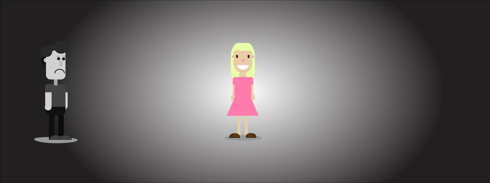
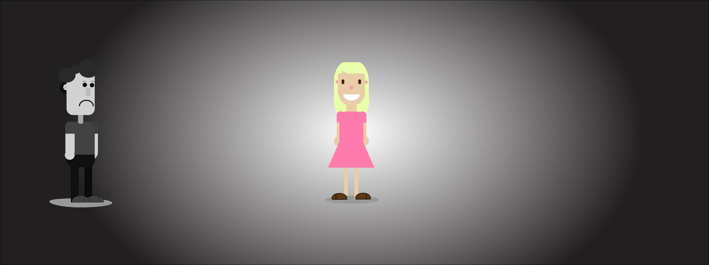

KEA
MMD student
MMD student
In this week submission I created a style tile, story, genre and message. After that I created story board + work sheet. And in the last part I made spritesheet animation.
It was challenging for me, because I needed to draw it in "Ilustrator". It was my first time, when I draw something there. If you want to appreciate, how i created a walking movement, click here:
 
